| PT | PU | PC | AP | NG | ND | NB | NS | MO | PSN | CH | DPXV | DSBM | DSIG | DCTC | DABM |
|---|---|---|---|---|---|---|---|---|---|---|---|---|---|---|---|
| 920045 | 9485 | A | 97 | 1 | 3 | 3 | 1 | MO | S | S | 1642 | 876 | 6763 | 7022 | 367 |
| 699997 | 9589 | M | 73 | 2 | 2 | 3 | 2 | N | S | S | 2033 | 1266 | 6916 | 7175 | 807 |
| 750000 | 6250 | M | 120 | 2 | 2 | 4 | 2 | N | N | N | 1122 | 1324 | 7211 | 7470 | 803 |
| 1149972 | 9426 | A | 122 | 1 | 3 | 3 | 1 | SM | N | N | 1612 | 1064 | 6952 | 7211 | 136 |
| 700040 | 6364 | M | 110 | 1 | 3 | 2 | 1 | MO | N | N | 1532 | 936 | 6824 | 7083 | 116 |
| 630000 | 7500 | B | 84 | 1 | 2 | 2 | 0 | N | N | N | 2376 | 1668 | 7543 | 7802 | 143 |
| 839990 | 8842 | M | 95 | 1 | 3 | 2 | 1 | MO | S | S | 2480 | 2615 | 8493 | 8752 | 319 |
| 530010 | 9815 | A | 54 | 1 | 3 | 1 | 0 | MO | N | N | 1371 | 1971 | 7846 | 8105 | 892 |
| 1075020 | 7790 | M | 138 | 2 | 3 | 4 | 1 | MO | N | N | 1517 | 1291 | 7166 | 7425 | 585 |
| 529980 | 8833 | M | 60 | 1 | 2 | 2 | 1 | MO | N | N | 1372 | 1164 | 6982 | 7241 | 660 |
Avaliação em Massa
Regressão Linear Simples
Luiz Droubi
Academia da Engenharia de Avaliações
28 de julho de 2025
Conjunto de Dados
Dados
Utilizaremos durente o curso alguns conjuntos de dados para exemplificar os métodos utilizados;
Zilli (2020):
Média Condicional
Média Condicional
- É importante compreender bem a Regressão Linear Simples (RLS) antes da Regressão Linear Múltipla (RLM);
- O conceito principal da regressão linear é que com ela estimamos a chamada média condicional;
- Para entender:
- Se coletamos uma amostra de preços unitários (PU) de apartamentos, podemos calcular a média incondicional (\(\mu\)) da amostra;
- Por exemplo: \(\hat\mu(PU) =\) R$ 8.188,04\(/m^2\)
- No entanto, os dados são heterogêneos:
- Diversos valores de área privativa (AP), número de garagens (NG), etc.
- Com a regressão linear simples, calculamos as médias condicionais:
- A média dos preços unitários dos apartamentos com 1 vaga de garagem, 2 vagas de garagem, etc.
- A média dos preços unitários dos apartamentos com padrão baixo, com padrão médio, etc.
- A média do preço dos apartamentos dado que a distância à beira-mar é de 200m
- Exemplos:
- \(\hat \mu(PU|NG=1) =\) R$ 7.191,23\(/m^2\)
- \(\hat \mu(PU|NG=2) =\) R$ 9.154,62\(/m^2\)
- \(\hat \mu(PU|PC=Médio) =\) R$ 7.529,32\(/m^2\)
- \(\hat \mu(PU|PC=Alto) =\) R$ 10.174,89\(/m^2\)
- \(\hat \mu(PU|DABM = 200) =\) R$ 9.191,15\(/m^2\)
- Se coletamos uma amostra de preços unitários (PU) de apartamentos, podemos calcular a média incondicional (\(\mu\)) da amostra;
Regressão Linear Simples
- Exemplo 1:
- Ao estimar valores médios através da RLS, obtemos médias diferentes das médias calculadas isoladamente!
Regressão Linear Simples
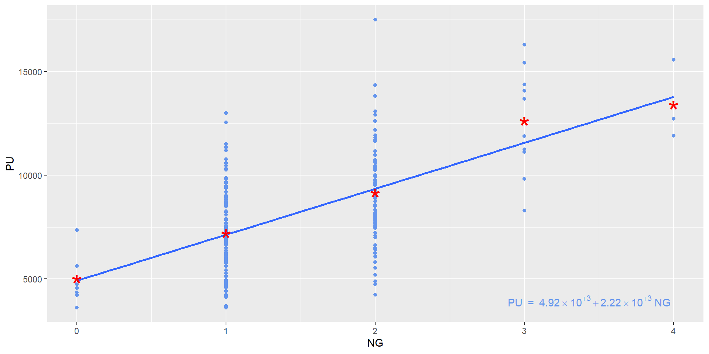
- O que é melhor? As médias isoladas ou as médias obtidas pela RLS?
RLS vs. médias isoladas
Regressão Linear Simples
Vantagens em estimar 5 médias vs. ajustar um modelo de regressão linear:
- 5 médias isoladas:
$`0`
One Sample t-test
data: X[[i]]
t = 12.14, df = 7, p-value = 5.881e-06
alternative hypothesis: true mean is not equal to 0
95 percent confidence interval:
4034.885 5986.865
sample estimates:
mean of x
5010.875
$`1`
One Sample t-test
data: X[[i]]
t = 37.563, df = 117, p-value < 2.2e-16
alternative hypothesis: true mean is not equal to 0
95 percent confidence interval:
6812.082 7570.376
sample estimates:
mean of x
7191.229
$`2`
One Sample t-test
data: X[[i]]
t = 36.828, df = 85, p-value < 2.2e-16
alternative hypothesis: true mean is not equal to 0
95 percent confidence interval:
8660.374 9648.859
sample estimates:
mean of x
9154.616
$`3`
One Sample t-test
data: X[[i]]
t = 15.595, df = 9, p-value = 8.044e-08
alternative hypothesis: true mean is not equal to 0
95 percent confidence interval:
10787.15 14447.65
sample estimates:
mean of x
12617.4
$`4`
One Sample t-test
data: X[[i]]
t = 12.091, df = 2, p-value = 0.006771
alternative hypothesis: true mean is not equal to 0
95 percent confidence interval:
8628.589 18162.077
sample estimates:
mean of x
13395.33 Regressão Linear Simples
Vantagens em estimar 5 médias vs. ajustar um modelo de regressão linear:
- Regressão Linear:
Regressão Linear Simples
- Graficamente:
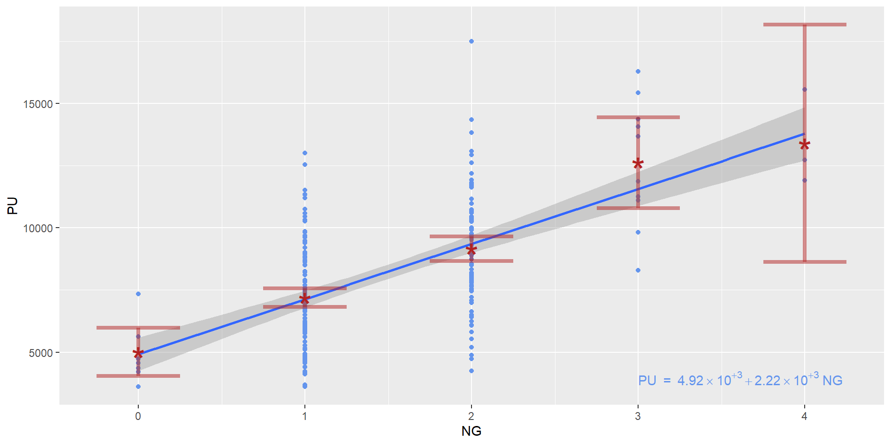
Apartado histórico
- Galton:
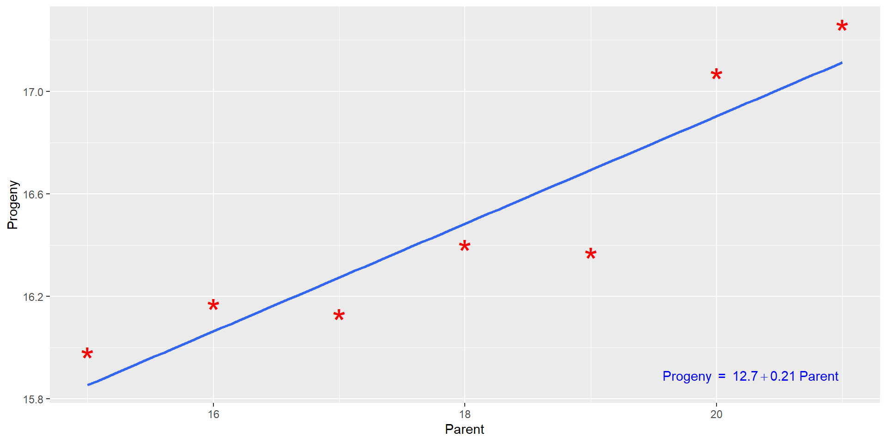
Regressão Linear Simples
- Exemplo 2:
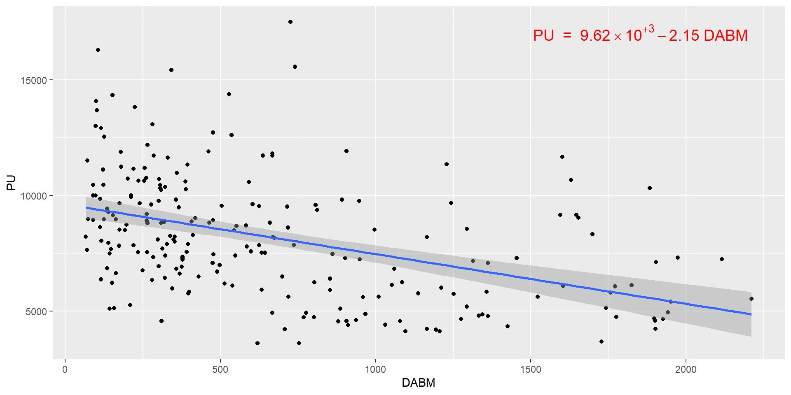
Modelo de Regressão Linear Clássico
Modelo de Regressão Linear Clássico
- Um modelo de regressão linear, em si, não exige normalidade, homoscedasticidade, etc.
- No entanto, se estas hipóteses são verificadas, podemos utilizar a inferência clássica.
- Assim, definimos um Modelo de Regressão Linear Clássico (MRLC) como:
- \[y = \alpha + \beta x + \epsilon \qquad(1)\]
- Em que:
- \(y\) é a variável resposta
- \(\alpha\) e \(\beta\) são parâmetros da população
- \(x\) é a variável explicativa
- \(\epsilon\) é um termo de erro
- No MRLC, \(\epsilon \overset{\underset{\mathrm{i.i.d.}}{}}{\sim} \mathcal N(0, \sigma^2\mathbf I)\)
- Em que:
- \[y = \alpha + \beta x + \epsilon \qquad(1)\]
- Não conhecemos \(\alpha\), \(\beta\), \(\epsilon\) e \(\sigma\)
- Então estimamos \(\hat \alpha\), \(\hat \beta\) e \(\hat \sigma\)
- E prevemos \(\hat \epsilon\) (os resíduos)
Solução do MRLC
Pode-se demonstrar que a média incondicional é o valor que minimiza o erro médio quadrático (SQE) de uma amostra (Matloff 2009, 57).
Dada uma amostra \(y = y_1, y_2, \ldots, y_n\), o valor \(c\) que minimiza \(1/n\sum_{i=1}^{n}(y_i-c)^2\) é:
- \[ \begin{aligned} S(c) &= \sum_{i=1}^n (y_i-c)^2 \\ &= \sum_{i=1}^n (y_i^2 - 2cy_i + c)^2 \\ &= \sum_{i=1}^n y_i^2 - \sum_{i=1}^n 2cy_i + \sum_{i=1}^n c^2 \\ &= \sum_{i=1}^n y_i^2 - 2c \sum_{i=1}^n y_i + nc^2 \end{aligned} \qquad(2)\]
- \[ \begin{aligned} S'(c) &= -2\sum_{i=1}^n y_i + 2nc = 0 \leftrightarrow \\ 2nc &=2\sum_{i=1}^n y_i\leftrightarrow \\ nc &= \sum_{i=1}^n y_i\leftrightarrow \\ c &= \frac{1}{n}\sum_{i=1}^n y_i \end{aligned} \qquad(3)\]
- Da mesma forma, na regressão linear, a média condicional é aquela que minimiza os resíduos quadráticos: \(1/n\sum(\hat\epsilon_i^2)\)
Solução do MRLC
Ver Hochheim (2015, 18):
\[ Z = \sum_{i=1}^n \hat\epsilon_i^2 = \sum_{i=1}^n [y_i - (\alpha + \beta x_i)]^2 \qquad(4)\]
- \[ \begin{aligned} \frac{\partial Z}{\partial \alpha} &= 0 \leftrightarrow \\ \sum_{i=1}^n -2[y_i-(\alpha + \beta x_i)] &= 0 \leftrightarrow \\ \sum_{i=1}^n y_i - \alpha - \beta x_i &= 0 \leftrightarrow \\ \sum_{i=1}^n y_i - \sum_{i=1}^n \alpha - \sum_{i=1}^n \beta x_i &=0 \leftrightarrow \\ \sum_{i=1}^n y_i - \sum_{i=1}^n \beta x_i &= n\alpha \leftrightarrow \\ \overline y - \beta \overline x &= \alpha \end{aligned} \qquad(5)\]
- \[ \begin{aligned} \frac{\partial Z}{\partial \beta} &= 0 \leftrightarrow \\ \sum -2x_i(y_i - (\alpha + \beta x_i)] &= 0 \leftrightarrow \\ \frac{\sum_{i=1}^n(x_i - \overline x)(y_i - \overline y)}{\sum_{i=1}^n(x_i - \overline x)^2} &= \beta \end{aligned} \qquad(6)\]
Hipóteses
Até agora derivamos \(\hat \alpha\) e \(\hat \beta\) sem fazer quaisquer hipóteses quanto à normalidade, homoscedasticidade, etc.
Se os erros tiverem distribuição normal e variância constante, contudo, então:
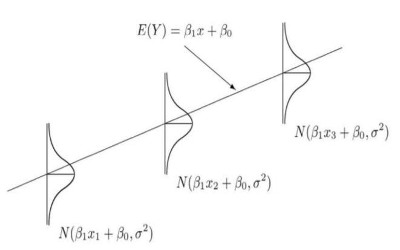
- \(\hat\sigma = \sqrt{MSE}\)
Análise de Variância
Análise de Variância
- Na regressão simples:
| Efeito | SS | GL | MQ | F | p-valor |
|---|---|---|---|---|---|
| Regressão | SQE | 1 | SQE/1 | MQE/MQR | |
| Resíduos | SQR | n - 2 | SQR/(n-2) | ||
| Total | SQT | n - 1 |
- \[SQT = \sum_{i=1}^n (y_i - \overline y)^2\]
- \[SQR = \sum_{i=1}^n (y_i - \hat \beta x_i)^2\]
- \[SQE = SQT - SQR\]
- \[MSE = \frac{SQR}{n-2}\]
Exemplo
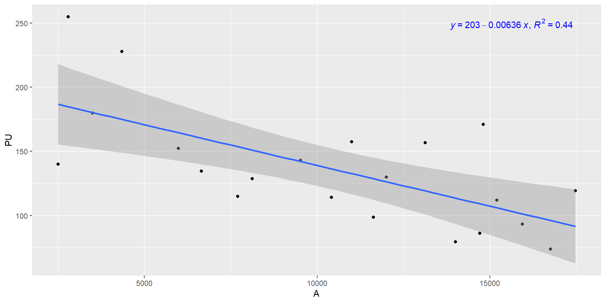Exemplo
Analysis of Variance Table
Response: PU
Df Sum Sq Mean Sq F value Pr(>F)
A 1 18521 18521.3 15.213 0.0009621 ***
Residuals 19 23133 1217.5
---
Signif. codes: 0 '***' 0.001 '**' 0.01 '*' 0.05 '.' 0.1 ' ' 1- Com a tabela da Análise de Variância podemos calcular:
- \(MSE = \frac{SQR}{21-2} = \frac{23.133}{19} = 1.217,53\)
- \(\hat \sigma = \sqrt{MSE} = \sqrt{1.217,53} = 34,89\)
Exemplo
Call:
lm(formula = PU ~ A, data = dados)
Residuals:
Min 1Q Median 3Q Max
-46.756 -23.167 -8.081 24.802 70.152
Coefficients:
Estimate Std. Error t value Pr(>|t|)
(Intercept) 202.655616 18.570539 10.91 1.27e-09 ***
A -0.006360 0.001631 -3.90 0.000962 ***
---
Signif. codes: 0 '***' 0.001 '**' 0.01 '*' 0.05 '.' 0.1 ' ' 1
Residual standard error: 34.89 on 19 degrees of freedom
Multiple R-squared: 0.4446, Adjusted R-squared: 0.4154
F-statistic: 15.21 on 1 and 19 DF, p-value: 0.0009621- Repare que o p-valor do teste t para o regressor é igual ao p-valor do teste F do slide anterior.
- Este teste é válido?
Análise de Resíduos
Análise de Resíduos
- Resíduos não se podem confundir com erros
- Resíduos são previsões para o erro, ajustadas com o modelo de regressão
- Os resíduos não tem, supostamente, distribuição normal
- São os resíduos padronizados que apresentam, supostamente, distribuição normal
Por que não obtemos normalidade?
- Porque os nossos dados (variável resposta) não tem distribuição normal:
Formas para lidar com a falta de normalidade
- Transformação da variável resposta:
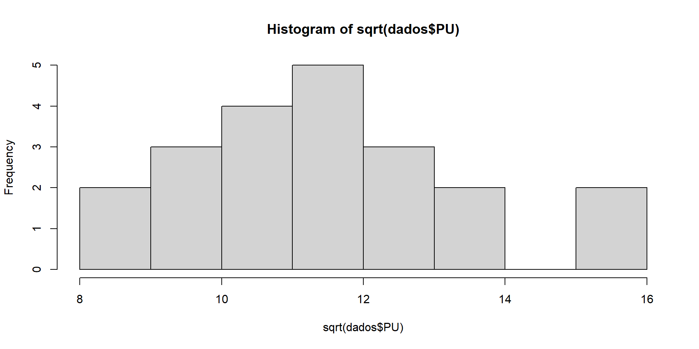
Testes de Hipótese de Intervalos de Confiança
Testes de Hipótese
Os testes de hipótese para os coeficientes verificam se não se pode descartar a hipótese do coeficiente ser nulo!
Foi estimado um intercepto e um coeficiente para o modelo RLS
- Porém, muito raramente o valor estimado para o coeficiente será zero!
- Mesmo que o real valor do coeficiente seja zero, é mais provável que a estimação resulte em um outro valor, simplesmente por conta de ruído!
- Isto não significa que a variável apresenta significância estatística
- Além do coeficiente, um erro-padrão é estimado para a variável explicativa
- Na inferência clássica:
- \[\hat\beta \sim \mathcal N \left (\beta, \frac{\sigma^2}{\sum_{i=1}^n(x_i - \overline x)^2} \right )\]
Intervalos de Confiança
- Um intervalo de confiança de \((1-\alpha)\cdot 100\%\) para \(\hat \beta\) pode ser assim calculado:
- \[\hat\beta \pm t_{\alpha/2, n-2}\cdot \sqrt{\frac{MSE}{\sum_{i=1}^n(x_i - \overline x)^2}}\]
Normalidade
Shapiro-Wilk normality test
data: rstandard(fit)
W = 0.92523, p-value = 0.1104Passa no teste da normalidade (\(p > 10\%\))
A ABNT (2011), contudo, diz:
A.3.1 O nível de significância máximo admitido nos demais testes estatísticos (aqueles não citados na Tabela 1) não deve ser superior a 10%.
Portanto deveríamos querer \(p < 10\%\)???
- Não, porque no teste de Shapiro-Wilk não queremos rejeitar a hipótese nula!
- No teste de Shapiro-Wilk a hipótese nula é de que há normalidade!
- Testes de hipótese são confusos!
É necessário testar?
- O intuito do teste é verificar a hipótese de que o coeficiente é nulo (\(\beta = 0\))
- Porém, ao construir um intervalo de confiança para \(\beta\), pode-se verificar se o valor zero está dentro do intervalo
- Caso zero esteja dentro do intervalo, não se pode rejeitar a hipótese de que o coeficiente seja nulo, ou seja, de não haver regressão
- Os intervalos de confiança obtidos considerando-se a normalidade, devem antes passar pela verificação da hipótese:
Formas para lidar com a falta de normalidade
- Não utilizar a inferência clássica
- É possível criar intervalos de confiança de outras formas
- P. Ex.: Bootstrap
- É possível criar intervalos de confiança de outras formas
Bootstrap
# A tibble: 2 × 6
term .lower .estimate .upper .alpha .method
<chr> <dbl> <dbl> <dbl> <dbl> <chr>
1 (Intercept) 157. 201. 243. 0.05 percentile
2 A -0.00957 -0.00620 -0.00278 0.05 percentile- O intervalo obtido pelo bootstrap é um pouco mais amplo do que o IC Normal!
\(R^2\) vs. \(\hat \sigma\)
\(R^2\) vs. \(\hat \sigma\)
- Uma estatística muito popular é o coeficiente de determinação (\(R^2\));
- O melhor modelo de regressão, porém, nem sempre será aquele com maior \(R^2\) ou \(R^2_{ajust}\)
Alguns pesquisadores se baseiam erroneamente apenas no valor de \(R^2\) para escolher o melhor modelo. Entretanto, tão importante quanto termos um \(R^2\) próximo de um, é que a estimativa de \(\sigma^2\) seja também pequena, pois os intervalos de confiança para os parâmetros de interesse são proporcionais a \(\sigma\) (Cordeiro e Lima Neto 2004, 12).
- O melhor ajuste dos dados da amostra a um modelo não significa que o modelo irá prever valores com precisão fora da amostra
\(R^2\)
- A maneira mais intuitiva de escrever \(R^2\) é:
- \[R^2 = 1 - \frac{\text{var}(\epsilon)}{\text{var}(y)} \qquad(7)\]
- Interpretação:
- Se o modelo não explicada nada, então \(\text{var}(\hat\epsilon) \approx \text{var}(y)\) e \(R^2 \approx 0\);
- Se, por outro lado, o modelo tem um poder de explicação razoável, então \(\text{var}(\hat \epsilon) << \text{var}(y)\) e então \(R^2\) se aproxima de 1.
- Interpretação:
- Outra forma de escrever \(R^2\) (Cordeiro e Lima Neto 2004, 12):
- \[R^2 = \frac{SQE}{SQT} \qquad(8)\]
- \[R^2 = 1 - \frac{\text{var}(\epsilon)}{\text{var}(y)} \qquad(7)\]
- Uma grande qualidade do \(R^2\) está na sua escala (\(0 \leq R^2 \leq 1\))
\(\hat \sigma\)
- É possível, com \(\hat \sigma\) ter um entendimento muito interessante do modelo
- No caso do modelo apresentado, vimos que \(\hat \sigma = 34,89\)
- Pode-se montar um intervalo de predição aproximado fazendo-se:
- \(IP_{95\%} = \hat \mu \pm 2\cdot \hat \sigma = \hat\mu \pm 2\cdot34,89 \approx \hat\mu \pm 70,0\)
- \(IP_{80\%} = \hat\mu \pm 1,28\cdot \hat \sigma = \hat\mu \pm 1,28\cdot 34,89 \approx \hat\mu \pm 45,0\)
- Conferindo:
fit lwr upr
1 139.058 64.29621 213.8198- \((139 - 70; \;139 + 70)\)
- \((69; 209)\)
- A grande vantagem de \(\hat \sigma\) é que ela está na mesma escala da variável resposta.
\(\hat \sigma\)
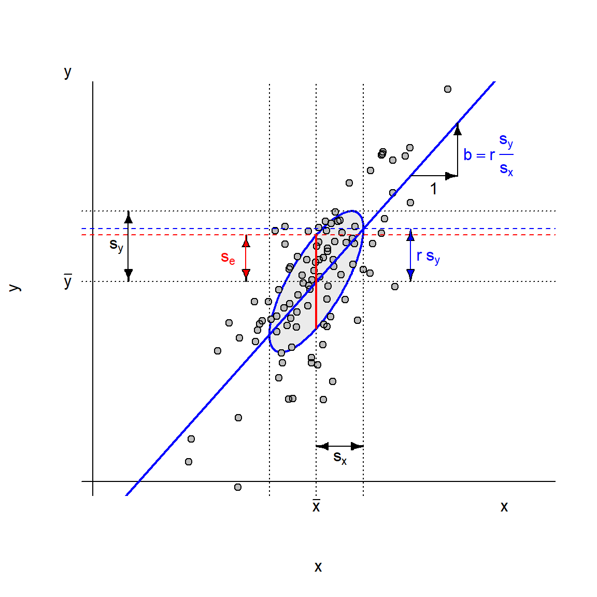Figura 2: Geometria dos Mínimos Quadrados Ordinários
Plotem os seus modelos!
# A tibble: 11 × 3
dataset x y
<chr> <dbl> <dbl>
1 (1) Linear 10 8.04
2 (1) Linear 8 6.95
3 (1) Linear 13 7.58
4 (1) Linear 9 8.81
5 (1) Linear 11 8.33
6 (1) Linear 14 9.96
7 (1) Linear 6 7.24
8 (1) Linear 4 4.26
9 (1) Linear 12 10.8
10 (1) Linear 7 4.82
11 (1) Linear 5 5.68# A tibble: 11 × 3
dataset x y
<chr> <dbl> <dbl>
1 (4) Leverage 8 6.58
2 (4) Leverage 8 5.76
3 (4) Leverage 8 7.71
4 (4) Leverage 8 8.84
5 (4) Leverage 8 8.47
6 (4) Leverage 8 7.04
7 (4) Leverage 8 5.25
8 (4) Leverage 19 12.5
9 (4) Leverage 8 5.56
10 (4) Leverage 8 7.91
11 (4) Leverage 8 6.89Plotagem de Modelos
Plotem os seus modelos!
Call: lm(formula = y ~ x, data = anscombe_quartet, subset = dataset == "(1)
Linear")
Coefficients:
Estimate Std. Error t value Pr(>|t|)
(Intercept) 3.0001 1.1247 2.667 0.02573 *
x 0.5001 0.1179 4.241 0.00217 **
---
Signif. codes: 0 '***' 0.001 '**' 0.01 '*' 0.05 '.' 0.1 ' ' 1
Residual standard deviation: 1.237 on 9 degrees of freedom
Multiple R-squared: 0.6665
F-statistic: 17.99 on 1 and 9 DF, p-value: 0.00217
AIC BIC
39.68 40.88 Call: lm(formula = y ~ x, data = anscombe_quartet, subset = dataset == "(2)
Nonlinear")
Coefficients:
Estimate Std. Error t value Pr(>|t|)
(Intercept) 3.001 1.125 2.667 0.02576 *
x 0.500 0.118 4.239 0.00218 **
---
Signif. codes: 0 '***' 0.001 '**' 0.01 '*' 0.05 '.' 0.1 ' ' 1
Residual standard deviation: 1.237 on 9 degrees of freedom
Multiple R-squared: 0.6662
F-statistic: 17.97 on 1 and 9 DF, p-value: 0.002179
AIC BIC
39.69 40.89 Plotem os seus modelos!
Call: lm(formula = y ~ x, data = anscombe_quartet, subset = dataset == "(3)
Outlier")
Coefficients:
Estimate Std. Error t value Pr(>|t|)
(Intercept) 3.0025 1.1245 2.670 0.02562 *
x 0.4997 0.1179 4.239 0.00218 **
---
Signif. codes: 0 '***' 0.001 '**' 0.01 '*' 0.05 '.' 0.1 ' ' 1
Residual standard deviation: 1.236 on 9 degrees of freedom
Multiple R-squared: 0.6663
F-statistic: 17.97 on 1 and 9 DF, p-value: 0.002176
AIC BIC
39.68 40.87 Call: lm(formula = y ~ x, data = anscombe_quartet, subset = dataset == "(4)
Leverage")
Coefficients:
Estimate Std. Error t value Pr(>|t|)
(Intercept) 3.0017 1.1239 2.671 0.02559 *
x 0.4999 0.1178 4.243 0.00216 **
---
Signif. codes: 0 '***' 0.001 '**' 0.01 '*' 0.05 '.' 0.1 ' ' 1
Residual standard deviation: 1.236 on 9 degrees of freedom
Multiple R-squared: 0.6667
F-statistic: 18 on 1 and 9 DF, p-value: 0.002165
AIC BIC
39.67 40.86 Plotem os seus modelos!
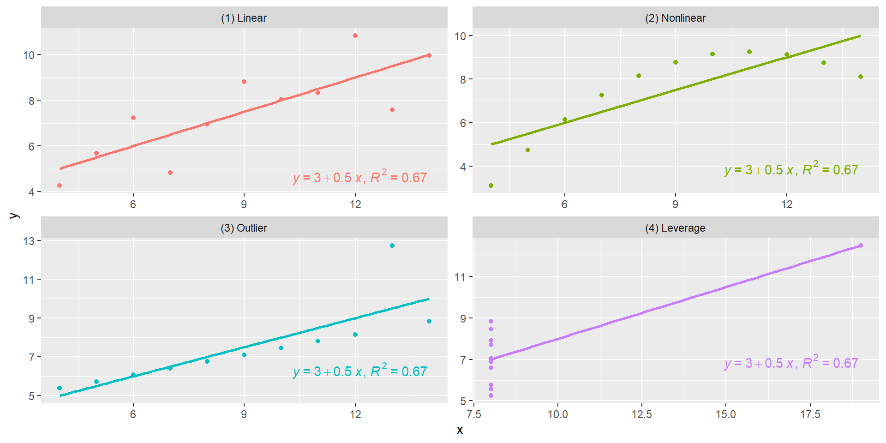Elipses de Dados
Elipses de dados
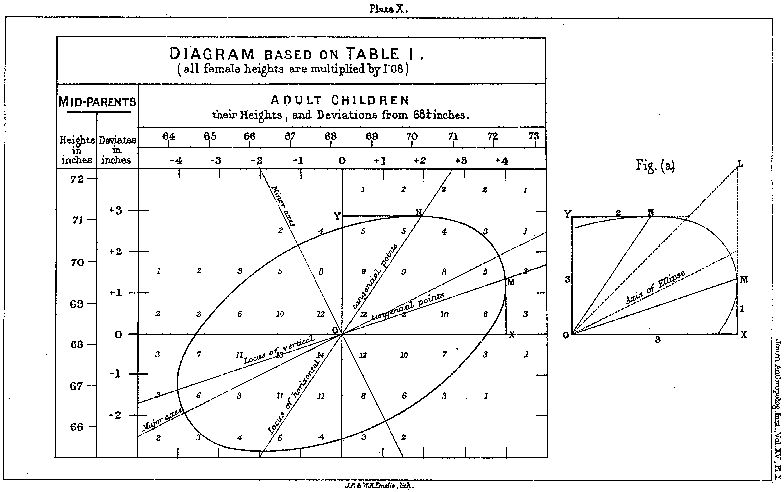Elipses de Dados, outliers e pontos influenciantes
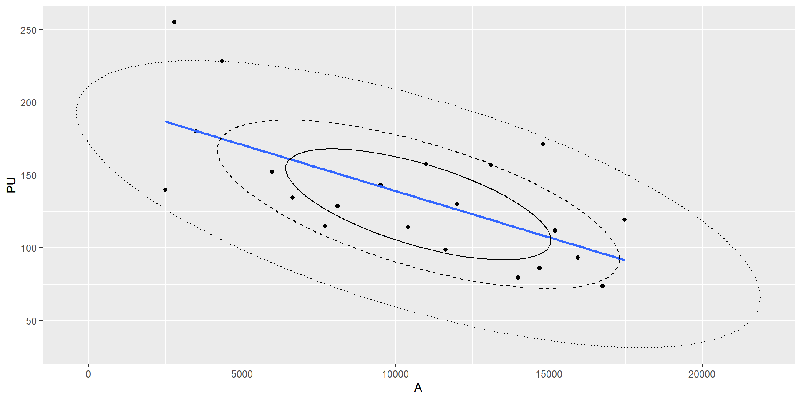Figura 3: Elipses de 40%, 68% e 95% dos dados.
- Na Figura 3, notar que a reta de regressão não passa pelo eixo das elipses!
Elipses e desvio-padrão
- Uma elipse de dados de X% dos dados é a elipse em que estão incluídos X% dos dados em torno da média bivariada (Friendly, Monette, e Fox 2013).
- Dentro da elipse de dados de 40% situam-se os pontos que distam \(\pm 1\) DP das médias (univariadas) em ambas as direções
- Dentro da elipse de 68% situam-se os dados que distam \(\pm 1,5\)DP da média bivariada em ambas direções
- Dentro da elipse de 95% situam-se os dados que distam \(\pm 2,45\)DP da média bivariada em ambas as direções
Elipses e desvio-padrão

Outliers e Pontos influenciantes
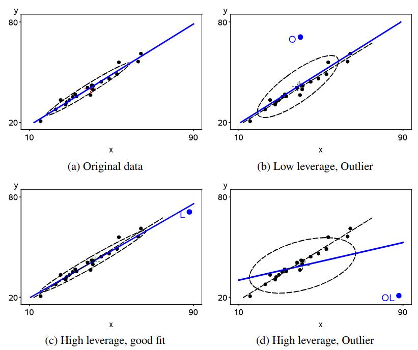Referências
ABNT. 2011. NBR 14653-2: Avaliacao de Bens – Parte 2: Imoveis Urbanos. Rio de Janeiro: Associacao Brasileira de Normas Tecnicas.
Cordeiro, Gauss M., e Eufrásio de Andrade Lima Neto. 2004. Modelos Paramétricos. São Paulo: Associação Brasileira de Estatística. https://www.ufjf.br/clecio_ferreira/files/2013/05/Livro-Gauss-e-Eufrasio.pdf.
Friendly, Michael, Georges Monette, e John Fox. 2013. «Elliptical Insights: Understanding Statistical Methods through Elliptical Geometry». Statistical Science 28 (1). https://doi.org/10.1214/12-sts402.
Hochheim, Norberto. 2015. Engenharia de Avaliações - Módulo Básico. Florianópolis: IBAPE - SC.
Matloff, Norman Saul. 2009. From Algorithms to Z-Scores: Probabilistic and Statistical Modeling in Computer Science. Davis, California: Orange Grove Books. http://heather.cs.ucdavis.edu/~matloff/132/PLN/probstatbook/ProbStatBook.pdf.
Zilli, Carlos Augusto. 2020. «Regressão geograficamente ponderada aplicada na avaliação em massa de imóveis urbanos.» Dissertação de mestrado. Florianópolis, SC: Universidade Federal de Santa Catarina.

VALORÍSTICA